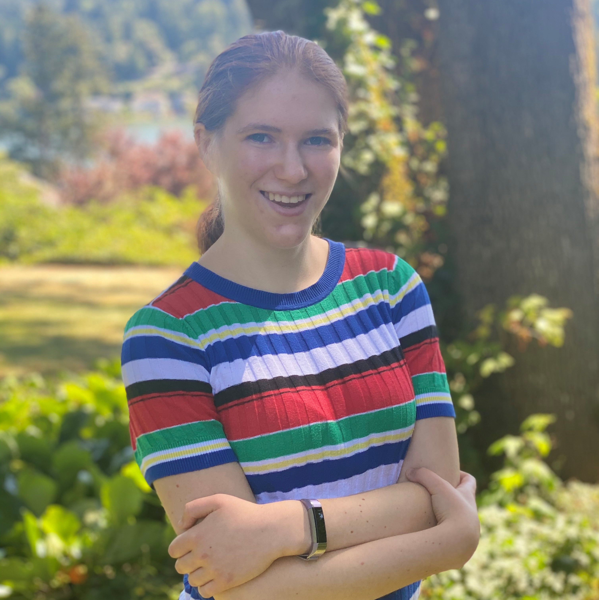
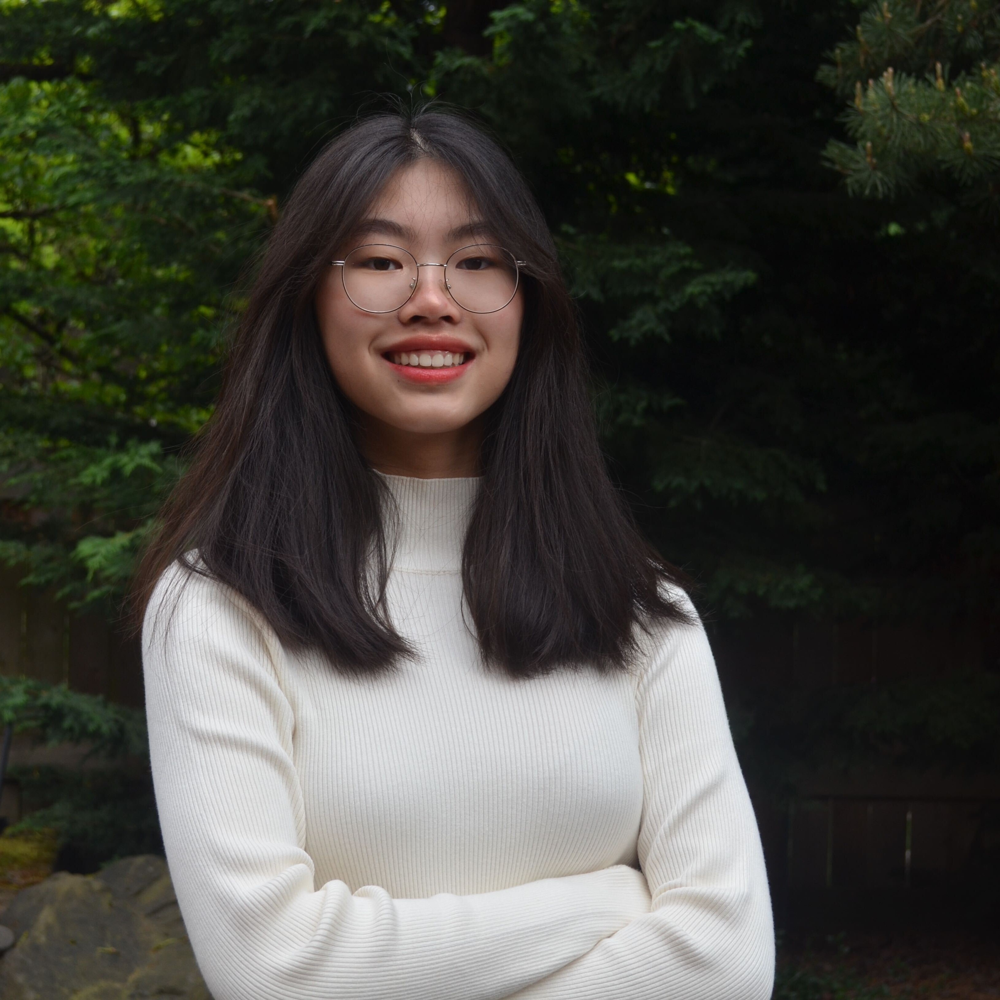

Meet the Instructors

Sydney Von Arx
I am Sydney Von Arx, and I love to code! I’m a computer science major at Stanford. I have experience with eight programming languages. I have completed three computer science-related internships and built several programs and apps. My real specialty, though, is web development. One of the few things I love more than coding is teaching!
Devin Von Arx
I have always enjoyed computers. After many years of coding, I joined Bit By Bit in 2019 as a volunteer. Since then, I have helped run all three of our coding programs (middle school, high school, and summer). I currently coordinate the Form and Function after-school coding program. I want to help people see the beauty behind the binary in coding.
Lucia Zhang
Hi! Compared to many people I know, I didn’t start coding until sophomore year due to an irrational fear of coding. However, with a lot of guidance, coding has become one of my most intriguing hobbies. I joined Bit By Bit in 2020, working extensively to develop our Hello World summer camp. My current focus is on directing Bit By Bit Central and all of its many wonderful teams. I want to Bit By Bit to be a strong community where students can learn to code, teach, and lead!